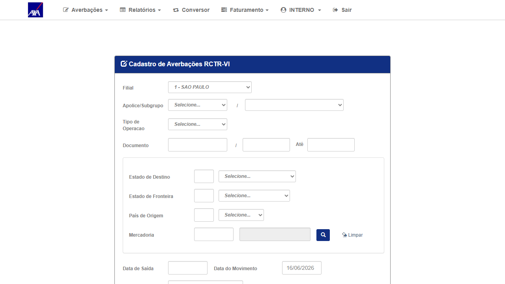
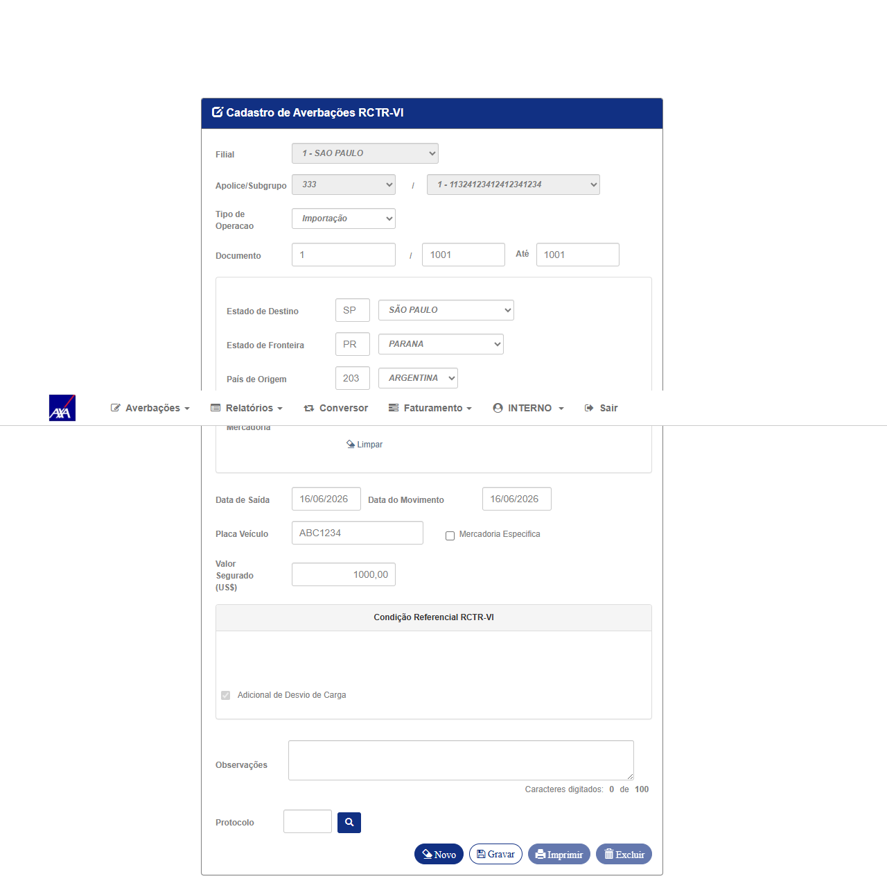
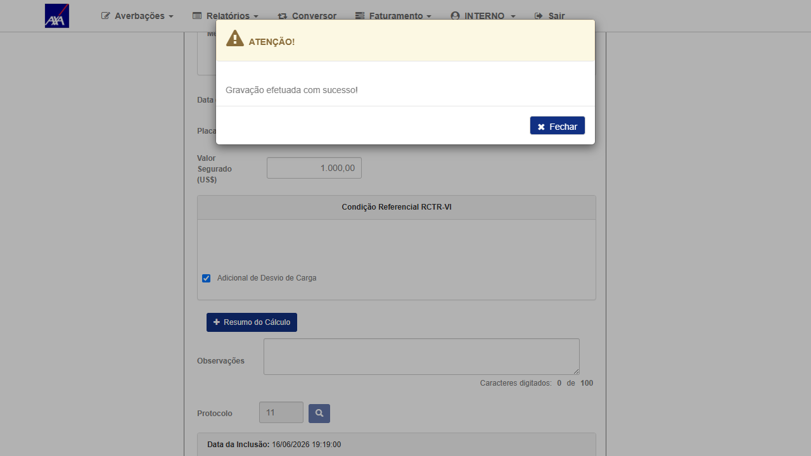
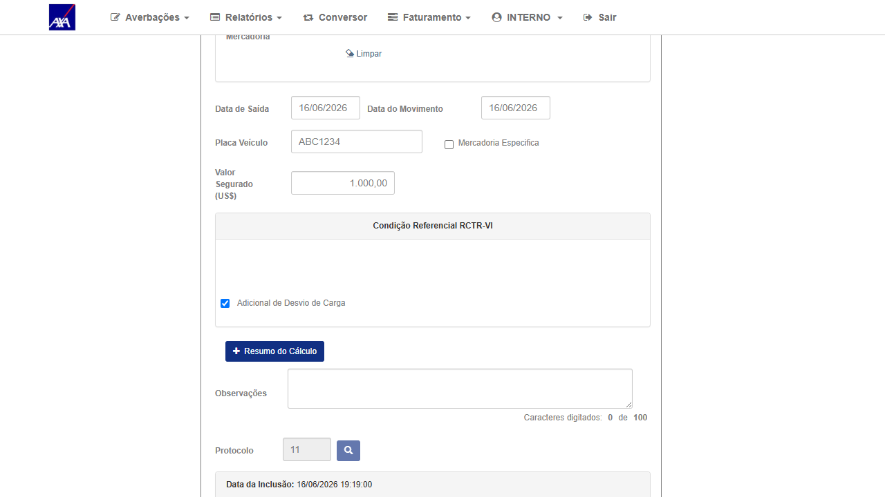
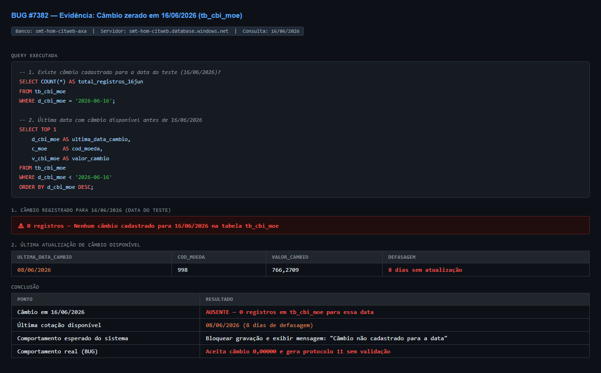

1. Resultado do Reteste
| # | Ação | Resultado esperado | Resultado obtido | Status |
|---|---|---|---|---|
| 1 | Login INTERNO no CITNET AXA ALFA e verificar tabela Cotação de Moedas (moeda 220) para 06/2026 | Tabela visível com câmbios por dia | Tabela confirmada: dia 16 = 0,0000000 (sem cotação); dia 15 = 6,0000000; dia 19 = 6,0000000 | ✓ OK |
| 2 | Acessar Averbações → Internacional → RCT-VI; selecionar apólice 333, subgrupo 1, filial 1; criar nova averbação com Data de Movimento = 16/06/2026; preencher campos e clicar Gravar | Sistema deve bloquear com mensagem "sem cotação" — dia 16 não tem câmbio cadastrado | Sistema exibiu "Gravação efetuada com sucesso!" — protocolo 11 gerado. O sistema usou câmbio de outro dia ao invés de bloquear o cadastro. | ✗ FAIL — Gravou indevidamente |
2. Comportamento incorreto documentado
BUG PERSISTE: O sistema gravou a averbação RCT-VI com Data de Movimento 16/06/2026,
dia que possui câmbio = 0,0000000 na tabela Cotação de Moedas (moeda 220 — Dólar Norte-Americano).
Protocolo gerado: 11. O sistema deveria ter bloqueado o cadastro com mensagem
"sem cotação cadastrada para a data" ou equivalente.
Comportamento esperado (correto): Quando o câmbio do dia for 0,0000000 (ausente),
o sistema deve impedir o cadastro da averbação e exibir mensagem informando que não há cotação
cadastrada para a data informada. O usuário deveria ser orientado a registrar a cotação antes de
prosseguir ou selecionar uma data com cotação válida.
Confirmação em banco (tb_cbi_moe — smt-hom-citweb-axa):
Query executada em 16/06/2026: 0 registros para
Query executada em 16/06/2026: 0 registros para
d_cbi_moe = '2026-06-16'.
Última cotação disponível: 08/06/2026 (8 dias sem atualização ao momento do teste).
O câmbio 0,00000 exibido na tela RCT-VI decorre diretamente da ausência de registro na tabela — o sistema
deveria ter impedido a gravação. Veja evidência 05 (query result).
3. Dados do Cenário
| Campo | Valor |
|---|---|
| Ambiente | CITNET AXA ALFA — https://axa-hml-faturamento.nsseg.com.br/alfa/citnet/ |
| Perfil / Usuário | INTERNO — ROT_AUTO / •••••• (senha no .env) |
| Apólice / Subgrupo / Filial | 333 / 1 / 1 (SAO PAULO) |
| Tela | Averbações → Internacional → RCT-VI |
| Data de Saída | 16/06/2026 |
| Data do Movimento | 16/06/2026 |
| Câmbio dia 16 (tabela) | 0,0000000 — sem cotação cadastrada |
| Protocolo gerado | 11 — gravado indevidamente |
| Data do reteste | 16/06/2026 |
| Resultado | FAIL — Bug persiste; sistema não bloqueou dia sem cotação |
4. Evidências
Clique nas imagens para ampliar.

01 — OK
Tela RCT-VI carregada — perfil INTERNO, apólice 333 selecionada, subgrupo 1, filial 1
Tela RCT-VI carregada — perfil INTERNO, apólice 333 selecionada, subgrupo 1, filial 1

02 — TESTE
Formulário preenchido com Data de Saída = 16/06/2026 (dia com câmbio = 0,0000000)
Formulário preenchido com Data de Saída = 16/06/2026 (dia com câmbio = 0,0000000)

03 — FAIL
"Gravação efetuada com sucesso!" — sistema gravou averbação com câmbio zerado no dia 16; deveria ter bloqueado
"Gravação efetuada com sucesso!" — sistema gravou averbação com câmbio zerado no dia 16; deveria ter bloqueado

04 — FAIL
Protocolo 11 gerado — averbação RCT-VI gravada indevidamente com data de câmbio ausente
Protocolo 11 gerado — averbação RCT-VI gravada indevidamente com data de câmbio ausente

05 — DB
Query na tabela
Query na tabela
tb_cbi_moe (banco HML smt-hom-citweb-axa): 0 registros para 16/06/2026 — última cotação disponível era de 08/06/2026 (8 dias de defasagem). Confirma que o sistema não tinha câmbio para a data e deveria ter bloqueado o cadastro.5. Conclusão
O bug persiste. O sistema não valida se existe cotação de câmbio cadastrada para o dia da averbação RCT-VI antes de gravar. Quando o câmbio = 0,0000000 (ausente), o correto seria bloquear e informar ao usuário. O protocolo 11 foi gerado com câmbio inválido (possivelmente aproveitando o câmbio do dia anterior = 6,0000000).
Ação necessária: Dev deve corrigir a validação de câmbio no RCT-VI para verificar se o câmbio do dia é > 0 antes de gravar, e bloquear com mensagem clara se não houver cotação para a data informada.